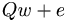

De: La Frikipedia, la enciclopedia extremadamente seria.
De: La Frikipedia, la enciclopedia extremadamente seria. De: La Frikipedia, la enciclopedia extremadamente seria.
| De la serie combinaciones de teclado para todos: | |||
| Qweqwe | |||
| |||
| Teclas a usar | Q, w, e | ||
| |
Mecanografía | ||
| Creador | Guillermo Puertas | ||
| Año de invención | 2000 | ||
| Dificultad para usarlo | Fácil | ||
| ¿Duele? | No si estás vacunado | ||
| Nivel de frikismo | Medio / Alto | ||
| Número de usos | Chorrocientos | ||
Familiar del famoso asdf, además también es una frase para rellenar una conversación de Mesenller. Su uso no es tan habitual como el de su envidiado familiar asdf. Pero también sirve para:
Qweqwe es uno de los raros familiares de asdf, lo cual qweqwe no tiene tanta importancia. Siempre ha sido degradado de su familia, sus padres  nunca lo quisieron como su hermano mayor Qwe, ni como a su mimado hermano pequeño, Qwerty. Era la oveja negra de la familia. Es un código Morse que es de menor grado que asdf, y que es utilizado por el 0,000000000000000001% de las personas de la tierra. Porque prefieren mas al pelotudo de asdf. Se intentó matar unas 25000000000000000 millones de veces pero ninguna le resultó. Ahora Qweqwe esta rehabilitado de su depresión gracias al hospital de Frikipedia y tambien gracias al Doctor House y Doctor Nick Riviera, Pero no gracias a Wally.
Cuando Qweqwe sintió una gran depresión por la patada voladora de Chuck. Fue al Hospital de Frikipedia a internarse. Y su médico era el Doctor House, y cuando Qweqwe estaba dormido House se lo violaba reiteradas veces como para toda la noche. Y Qweqwe no se daba ni cuenta(porque estaba cedado). Despues se internó en otro pabellón en donde allí trabajaba el Doctor Nick Riviera y el le dio estimulantes y antidepresivos a Qweqwe que le surtó efecto, pero también los efectos secundarios que tenía como por ejemplo: Follarse a todo el personal y a las enfermeras, histeria, ver al Monstruo macarrón volador en persona, entre otros. Y lo enviaron a otro pabellon donde trabajaba Wally pero el gilipollas nunca trabajo en eso, porque se escondia el pelotudo. Y se rehabilito Qweqwe pero quedo con traumas para toda su vida.
| |
|---|
| Alt+F4 | Any Key | Asdasd | ASDF | Bloq Despl | Ctrl+Alt+Supr | Ctrl+C Ctrl+V | Intro Ctrl+X | Ctrl+Z | Qwerty | Qweqwe | Teclado |
Autor(es):